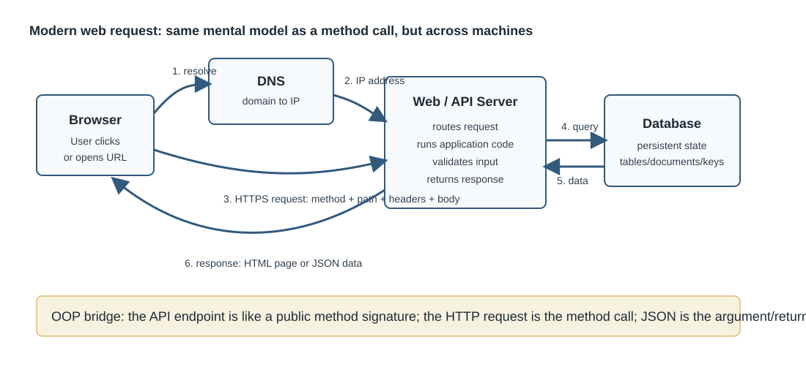
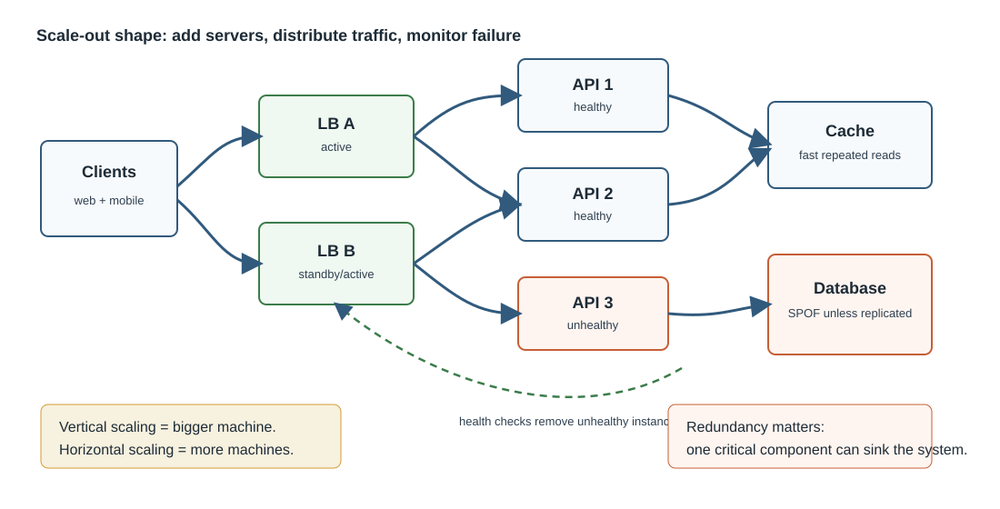
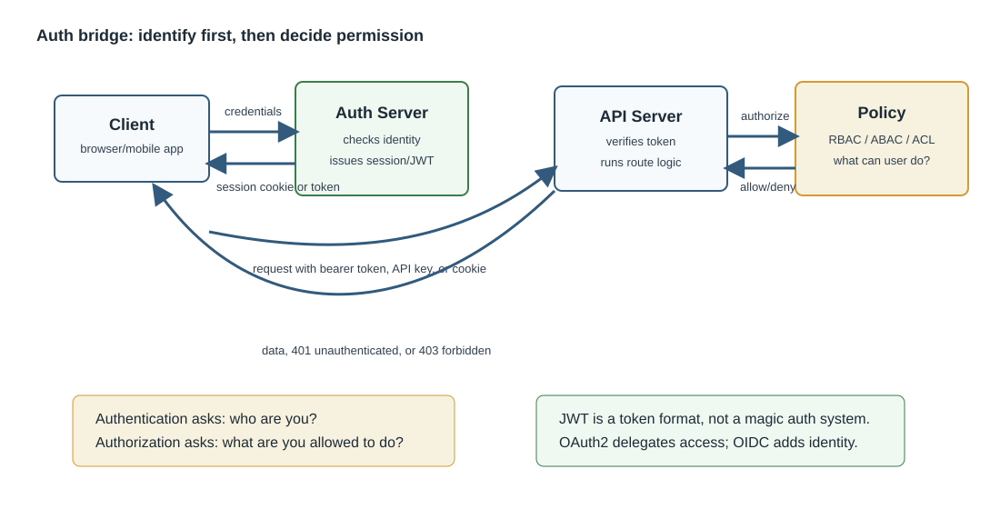

Concept Map
Follow this order if you want the shortest path from OOP programming to modern web app architecture.
1. Client-server
Browser or mobile app sends requests. Server returns HTML, JSON, or errors.
HTTPDNSJSON2. Data
Use SQL when relationships and correctness dominate. Use NoSQL/cache when access patterns demand flexibility or speed.
SQLNoSQLRedis3. Scale
Vertical scaling makes one machine bigger. Horizontal scaling adds machines and needs traffic distribution.
Load balancerHealth check4. APIs
API contracts are remote method signatures: path, method, input, output, errors, versioning.
RESTGraphQLgRPC5. Protocols
HTTP handles request/response. WebSockets handle real-time bidirectional communication. Queues decouple work.
HTTPSTCPUDP6. Trust
Authentication identifies the caller. Authorization decides what the caller may do. Security controls reduce abuse.
JWTRBACCSRFXSSRequest Flow
Click each step to connect familiar method-call thinking to networked application behavior.

Scaling Lab
Set traffic and reliability needs, then compare vertical and horizontal scaling choices.

API Chooser
Choose the style by client need, data shape, and performance target.
Recommendation
Auth Drill

Classify the scenario
Quiz
Immediate-feedback quiz. These questions cover the transcript's core claims and the OOP-to-web bridge in the notes.
Capstone Builder
Use this prompt builder to turn any familiar domain into a small system design practice problem.